Running, aviation & everyday moments
Life beyond research
A few parts of my life beyond research: running, aviation, sports, my dog Dewi, and time with the Duke and DKU communities.
Running
I enjoy running and am a former member of the DKU Varsity Running team. These are a few photos from my time running and training.
- 5K personal best
- 19:50
- 10K personal best
- 44:23
- Half-marathon personal best
- 1:45:30

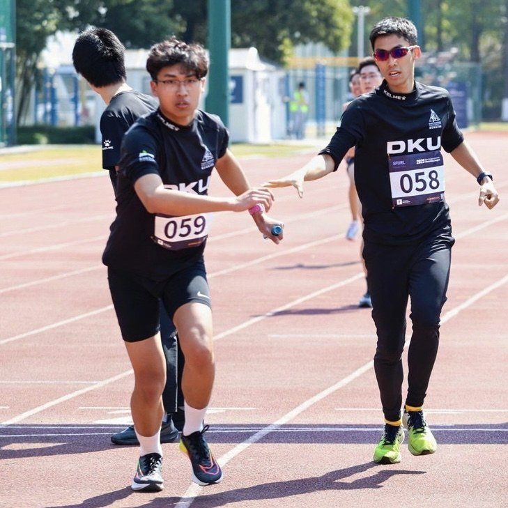

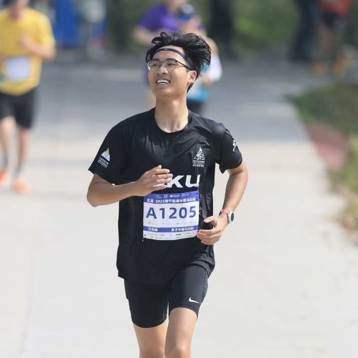

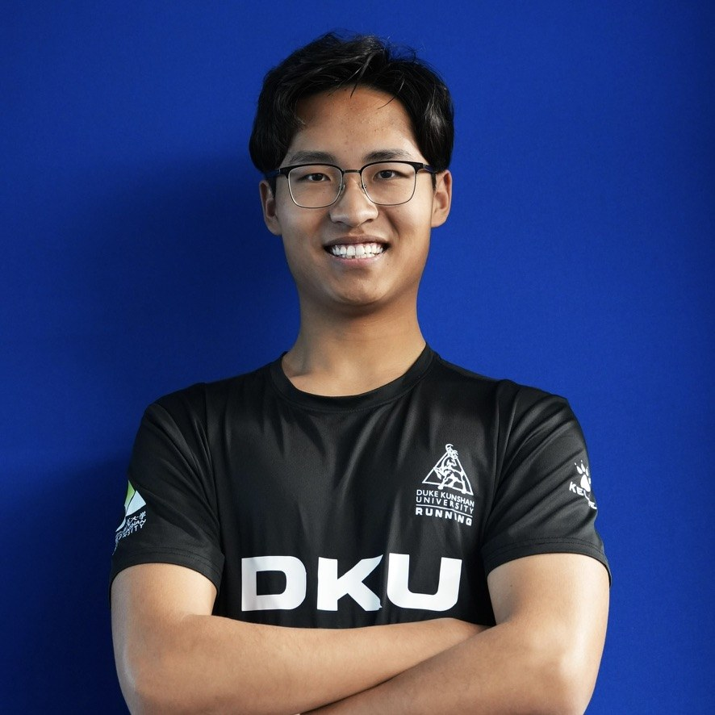

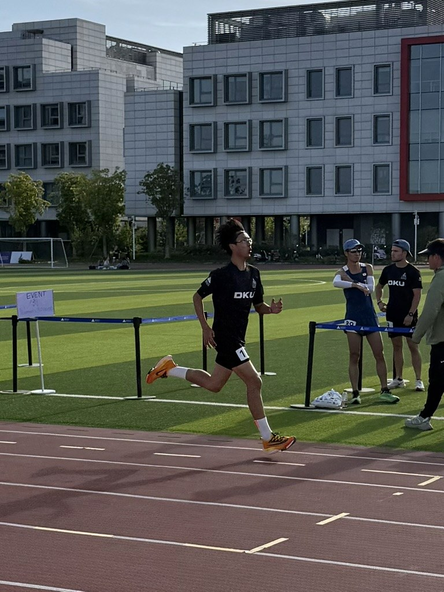
Aviation
I’m an aviation fan. I keep two flight logs to record all of my flights, and my photo collection includes these cockpit visits.

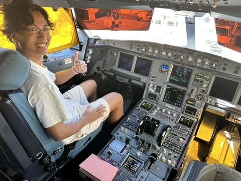

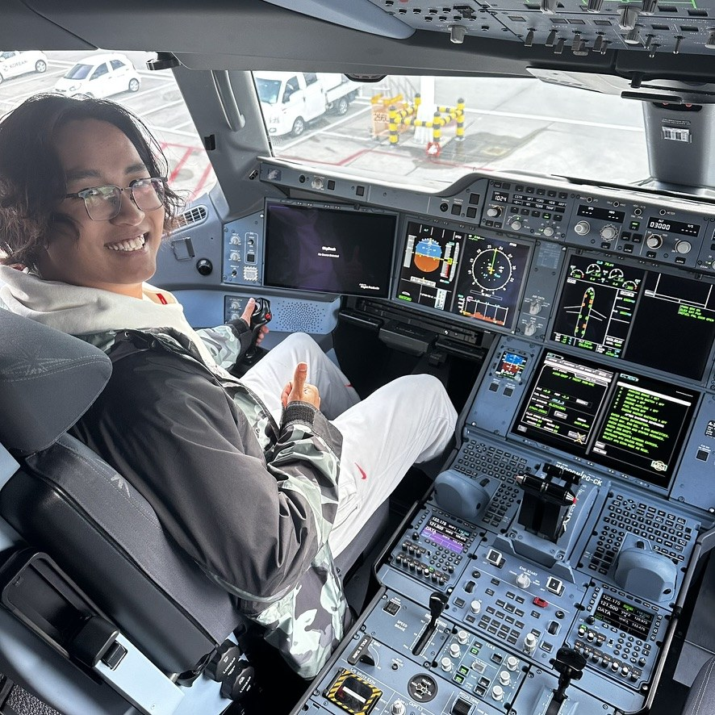

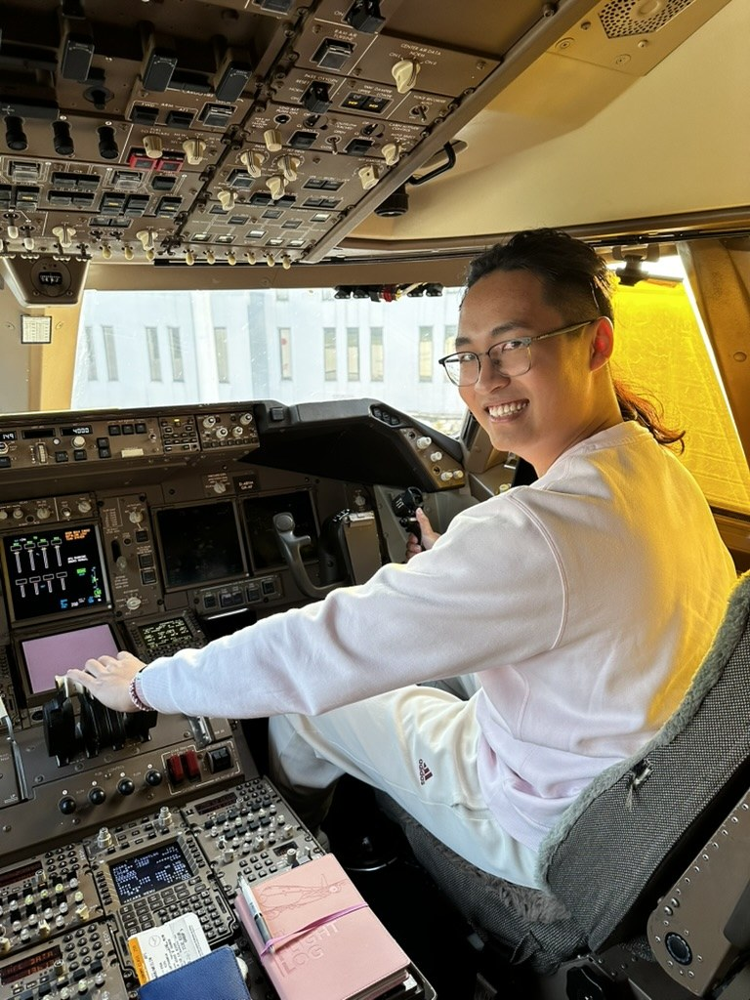

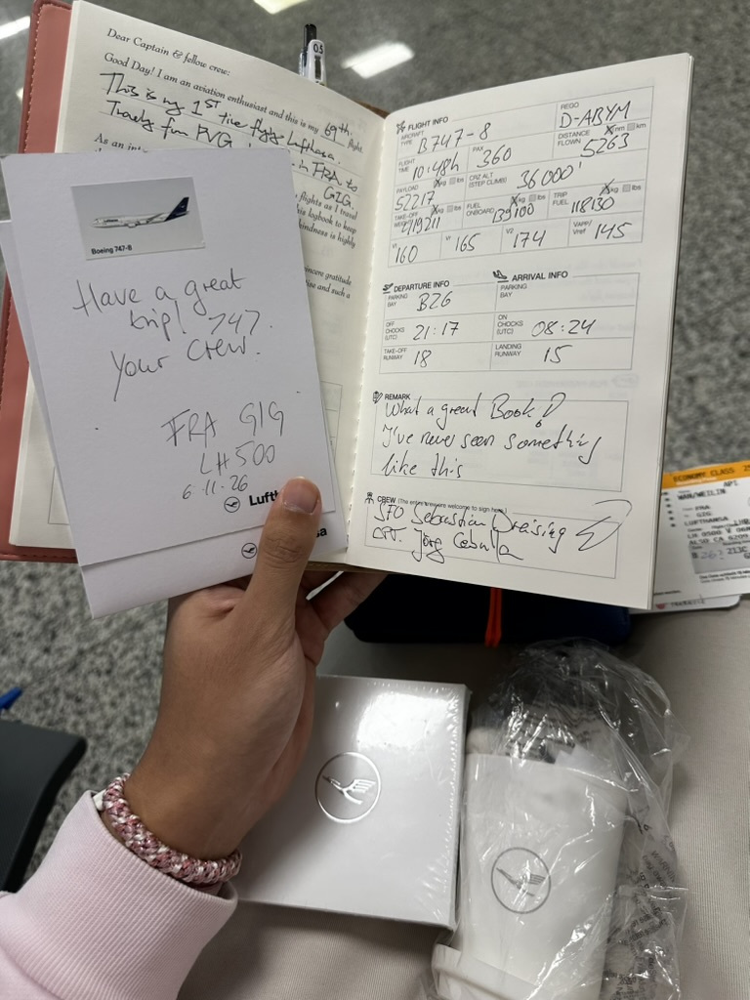
Sports with friends
I love sports and enjoy playing with friends.

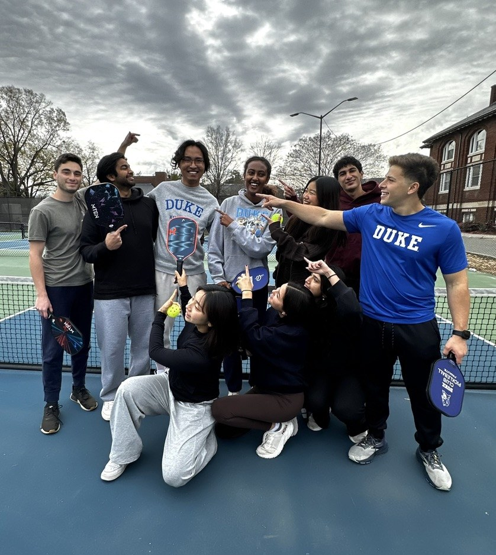
Meet Dewi
This is Dewi, my Shiba Inu. He is four years old as of November 2026.

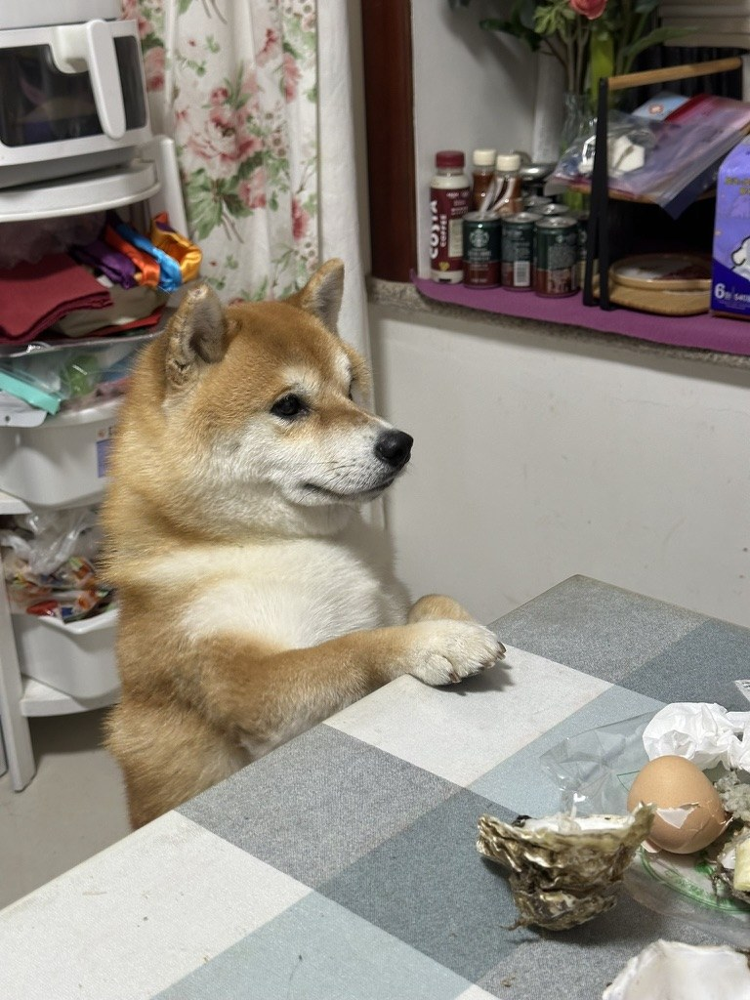

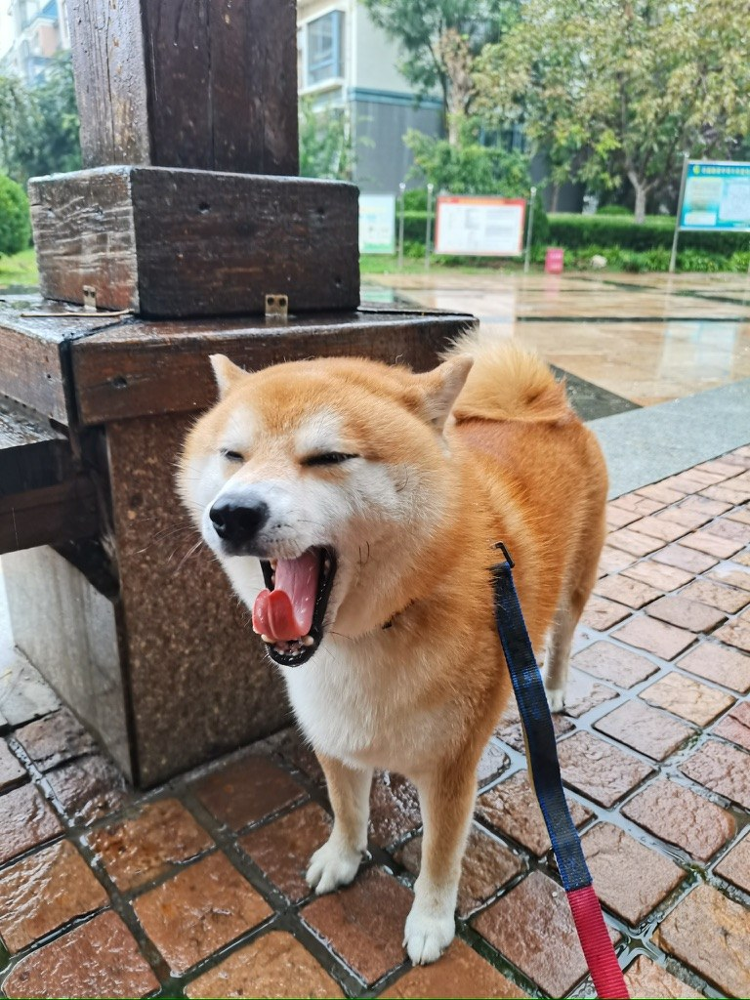
Across Duke & DKU
I have also been an Orientation Leader across three years of Duke and DKU programs, worked with middle-school students in Yuanling County, Hunan, and served in student leadership.
Orientation, education & student leadership →